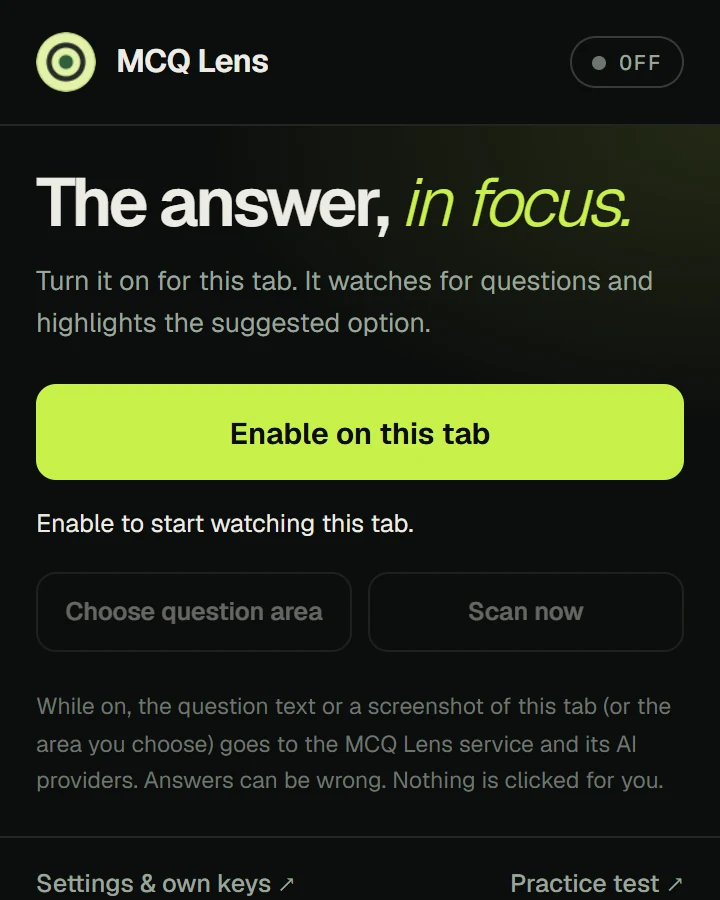
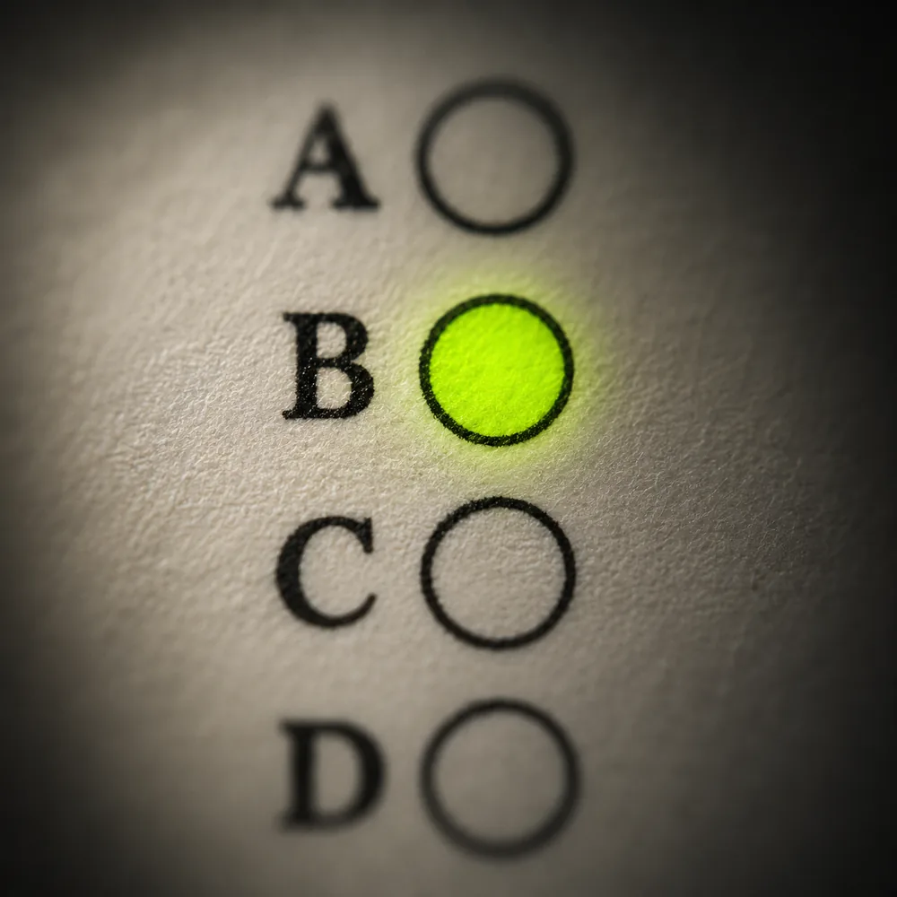

Load it in your browser
Download the zip and follow the guide for your browser. No store account, no sign-up.
MCQ Lens reads the question on your screen and highlights the suggested option, with its reasoning. Free, no account.
Demo: a lens moves over a practice question about page-table size and shows option C, 4 MiB, outlined as the suggested answer.
Everything else stays soft. The suggested option comes into focus, with the reasoning right beside it.
Download the zip and follow the guide for your browser. No store account, no sign-up.
Open a page with a question, click the MCQ Lens icon and choose Enable on this tab.


ReadThe suggested option is outlined on the page. Next question? It answers again.
It suggests and explains. You decide. Answers come from AI and can be wrong, so follow your school’s or test platform’s rules.
MCQ Lens only highlights. It doesn’t select or submit anything on the page.
It reads a page only after you turn it on there, and stops when you reload, leave or switch it off.
Add your own free Groq, Gemini or Z.ai key in Settings and your questions run on it, with no daily cap.
A question goes only to the MCQ Lens service and its AI providers, to get the answer. Read the privacy policy.
Practice test
25 random questions across eight subjects. At the end you get the answer key, so you can check how the extension did.
Start a practice testFree for Chrome, Edge, Brave, Opera and Firefox on desktop.
Download for Chrome